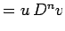
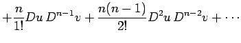
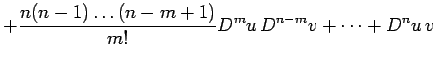
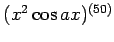
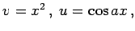
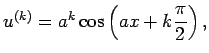
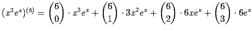

Inhalt Index DeskTop Bronstein

 Differentialrechnung Differentiation von Funktionen einer Veränderlichen Ableitungen höherer Ordnung
Differentialrechnung Differentiation von Funktionen einer Veränderlichen Ableitungen höherer Ordnung


Zur Berechnung der Ableitung n-ter Ordnung für ein Produkt aus zwei Funktionen kann die LEIBNIZsche Regel
| Dn(uv) |  |  | |
|  | (6.22) |
| Beispiel A |
|
: Setzt man  dann ergibt sich  |
| Beispiel B |
|
. |